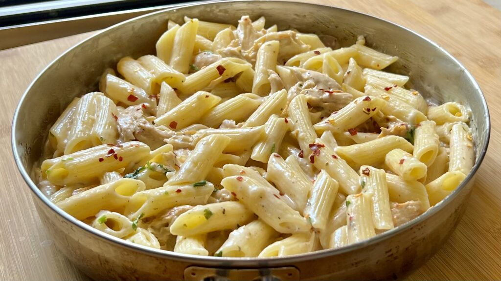

Pasta

Description
White Sauce Pasta (also referred to as White Pasta) is one of the most popular and easiest pasta recipes
that you can make at home. In this White Sauce Pasta Recipe, I am sharing an easy way to make a restaurant
style white sauce (or béchamel sauce) in which cooked penne pasta is tossed. The recipe comes together in 30 minutes and makes for a comforting brunch or lunch.
Ingredients
- Butter
- All-purpose flour
- Milk
- Salt
- Oregano
- Chilli flakes
- cheese
- Penne Pasta
- Garlic
- Onion
- Green Capsicum
Steps:
- Boil raw pasta according to the instructions given on the package or follow following instructions; Take 4-5 cups water in deep sauce pan, bring it to boil over medium flame. When it start boiling, add 3/4 cup Penne pasta and 1/2 teaspoon salt.
- Boil them until al-dente (cooked but not very soft). It will take around 10-12 minutes. To check whether pasta is cooked or not, take one pasta in a fork and bite it. If it is little firm to bite, it is cooked. If it is too hard to bite, it requires more cooking.
- Transfer cooked pasta to a large colander and drain excess water.
- While pasta is cooking, heat 1/2 teaspoon oil in a pan over high flame. Add 1/4 cup chopped green capsicum and 1 finely chopped onion and salt.
- Stir and cook until veggies are little cooked but still crunchy, for around 2-3 minutes. Turn off the flame and transfer them to a plate.
- Heat 1½ tablespoons butter in the same pan over medium flame. Add 1/2 teaspoon finely chopped garlic and sauté for 30 seconds.
- Add 1½ tablespoons All purpose flour and Stir continuously and cook for a minute.
- Pour 1½ cups milk little by little while stirring continuously with a whisk. Stir and mix for 1-2 minutes.
- Reduce flame to low. Continue stirring and cooking until mixture starts to thicken. It will take around 3-4 minutes depending on the size and thickness of the pan.
- Add 1/4 teaspoon oregano, 1/4 teaspoon red chilli flakes and salt.
- Add Pasta and Cheese and Turn off the flame. Mix well.
- Transfer it to a serving plate. White sauce pasta is now ready. Garnish it with grated cheese and serve while they are still hot.